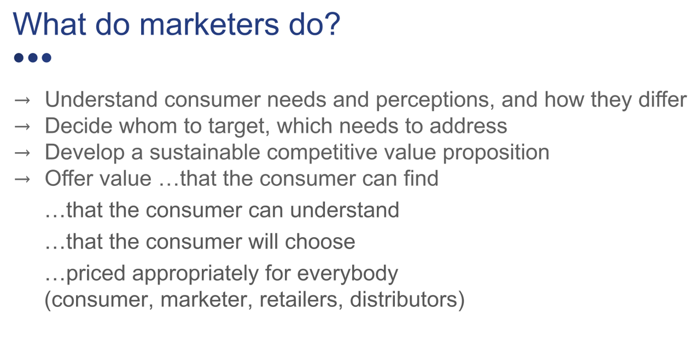

Day 1: Intro to Marketing, Quiz 1, Customer Interview Exercise
Day 2: Causality & Advertising, Quiz 2, MMM Exercise
“Make something people want.”
"This is probably the thing we see wrong with Y Combinator apps most frequently, is that people have not thought about the market first, and what people want first."
Customer Value: Challenges
Customers often don’t know CV (not their job)
CV often confounded with attitudes, beliefs, limited information
CV is always subjective, often malleable & socially influenced
CV measures are incomplete and biased (e.g., reviews)
Easy to misinterpret available CV measures
CV measurement is not always prioritized

The only respectable marketing objective: Long-term profits
“Marketing is too important to be left to the marketing people.” -David Packard, HP
Traditional Marketing Frameworks: Mainly Vibes, but still Important
Situation analysis: 3/4/5 C’s
- Customer, Competitor, Company / Context / Collaborators
Strategic decisions: STP
- Segmentation, Targeting, Positioning
Tactical decisions: 4/…/10 P’s, AKA the “Marketing Mix”
- Generate stated-preference data trading off attributes, price
- Quantifies how potential attributes affect demand and profits
- Can predict competitor response and proactive strategy
- Multiple limitations, but powerful and popular
Net Promoter Score, Reviews
- NPS: "How likely are you to recommend this product to a friend?"
- Simplistic but powerful indicator of customer satisfaction
- Helps to identify most & least important aspects of value proposition, pain points, misunderstandings, segmentation, opportunities to improve
- Reviews are super important, but also : truncated distribution, non-representative, fake-able
“Our core business is connected with the customers’ needs and we will not be able to satisfy them if we don’t have a deep sense of empathy.”
Sales
Sales is the primary marketing channel in B2B
B2B marketing teams are smaller than B2C marketing teams
Why do great salespeople earn so much money?
- profit impact is directly observable
- educate customers, negotiate, even act as customer agents
- enable customer needs discovery & product customization
- enable customer risk mitigation & service
- build relationships & trust, help generate and develop warm leads
Marketing dept manages brand, sources and prioritizes leads, then supports & constrains sales
How do marketing and sales usually interact?
- What role do analytics play in sales?
Marketing truisms
Advertising & sales cannot fix a broken value proposition, misunderstanding of consumer needs, unsustainable competitive position, or absence of customer trust
Start with customer value first, then monitor and test as market evolves
Marketing strategy == sustainable value proposition vs. competitors based on the market’s heterogeneous customer needs, perceptions and behaviors
Advertising & sales can implement a good strategy
- Without strategy, we're shooting in the dark, likely wasting money
- This is why marketing has to be more than just ads & sales
Takeaways
Customers keep the lights on
- The only 3 ways to generate revenue are to attract, retain and develop customers
Great marketing creates customer value in order to maximize long-run profits
- Ads and sales require a compelling strategy to avoid reducing profits
Long-term focus aligns most customer and company interests, avoids ethical problems
You’re going to conduct and write up your first customer interviews.
Choose any customer need that most Rady grad students experience. Pick a customer need that interests you, other than caffeinated beverages. [5 min]
Write a 4-question interview script to learn customer need, solution, experience and value. Customize the questions for your category. Write down what you expect to learn from each question. Submit on canvas (Ex 1A, 1 per team, 100 words max). [25 min]
Sample: 1. Tell me about the last time you bought a caffeinated beverage. Why did you buy it? (Motivation, context) 2. Describe the purchase experience. (Place, consideration set, price) 3. Please describe the consumption experience. (Taste, effectiveness, etc <– CV) 4. Would you recommend it to a friend? Why or why not? (Satisfaction)
Each team member interviews a classmate in another group, and be interviewed by same classmate. [30 min]
Collate interviews, write up what you learned, and what surprised you. Submit on canvas (Ex 1B, 1 per team, 100 words max). [30 min]
LLM use encouraged. Time limits are strict. Debrief after.